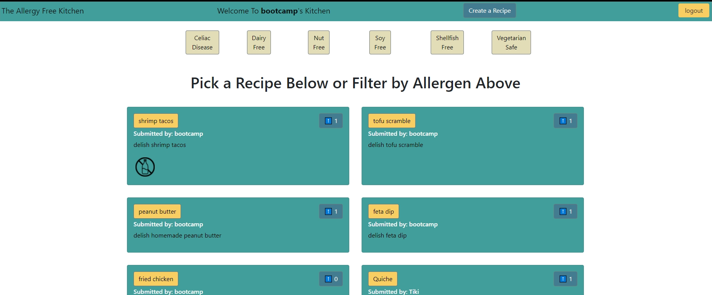
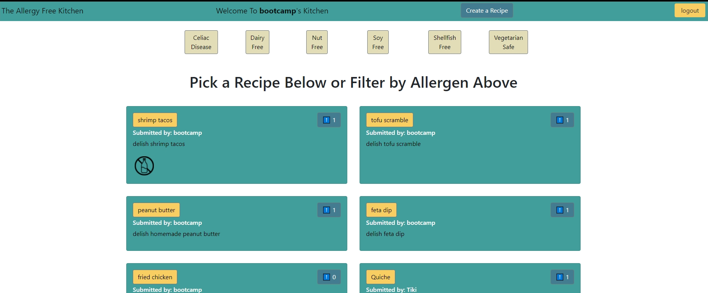
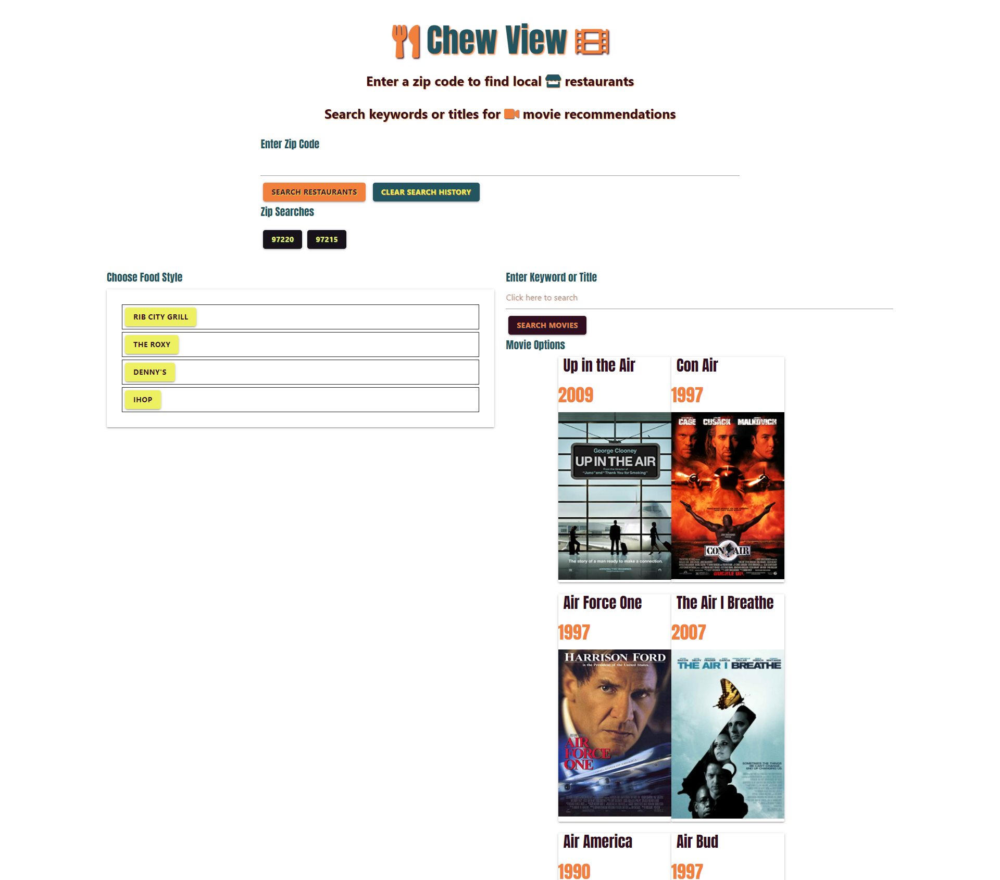
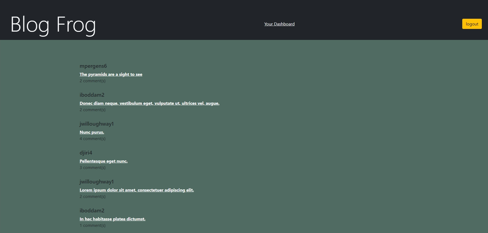

The Allergy-Free Kitchen
A full-stack approach to allergy-free cooking. Includes user profiles, posting, and tools for filtering. Inspired by people like my wife, whose lives depend on knowing what is in their food.

Web developer with a background in medicine and medical education who aims to develop web applications that automate manual processes. Software development certificate from the University of Oregon including Javascript, JQuery, Bootstrap, frameworks, server-side requests, and of course HTML and CSS. Interested in developing fast, responsive web applications with minimal dependencies. Excellent addition to any team looking for a self-starter who can both create from scratch, and add features to already-existing applications.
I currently write scripts in VBA and manage online inventory for a wholesale nursery brokerage service in Newberg, OR.
I am originally from Arizona, but I am loving Oregon!
On my days off I like to game with friends both local and far away,
and spend time with family.
A full-stack approach to allergy-free cooking. Includes user profiles, posting, and tools for filtering. Inspired by people like my wife, whose lives depend on knowing what is in their food.
A dinner & movie dating app that believes the hardest part of dating should be getting the date.
Blog Frog is a full-stack tech networking app that lends itself to people who work with technology and are looking for a custom networking solution.
